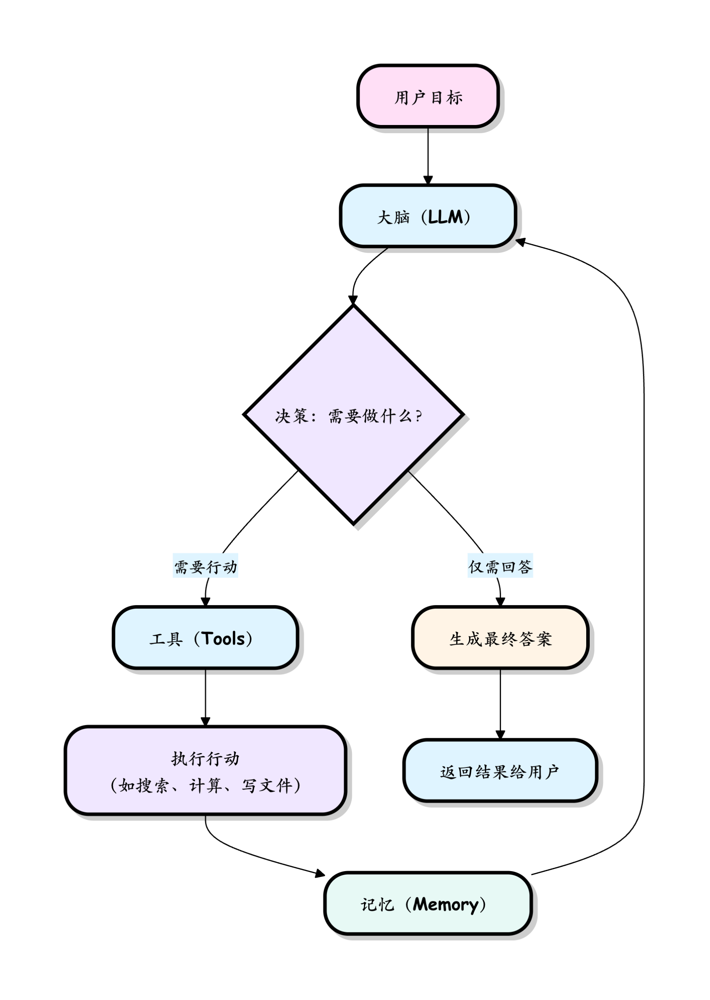
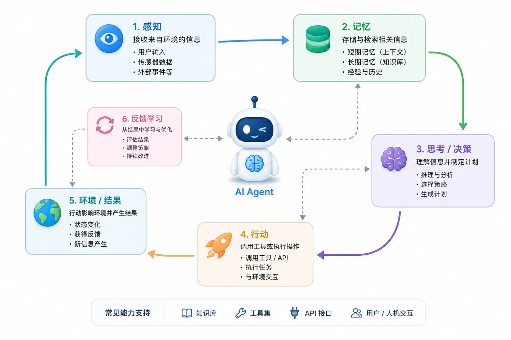

Principio de funcionamiento del AI Agent
Antes de empezar a profundizar en el AI Agent, respondamos primero a una pregunta fundamental:Ya que existe LLM, ¿por qué se necesita Agent?
Imagina que tienes un amigo muy erudito: ha leído muchísimos libros y puede responder casi cualquier pregunta, pero desde 2024 no recibe nueva información, no tiene teléfono, no puede conectarse a internet, no puede pedir comida a domicilio ni consultar el clima de hoy. Así es un gran modelo de lenguaje (LLM): rico en conocimiento, peroel conocimiento se limita a los datos de entrenamiento, no puede obtener información en tiempo real de forma proactiva ni ejecutar acciones concretas.
而 AI AgentEs como equipar a este amigo con: un teléfono con acceso a internet, una calculadora, un calendario... permitiéndole no solo pensar, sino tambiénactuar de verdad. El AI Agent, al combinar el LLM con herramientas y memoria, supera esta limitación y lograla unidad de pensar y actuar。
Los tres componentes principales del AI Agent
Un AI Agent típico se compone de tres partes clave que trabajan en conjunto. Sigamos usando la analogía anterior para entenderlo:
1. Cerebro (The Brain): gran modelo de lenguaje (LLM)
- Rol: el centro de decisiones y motor de razonamiento del Agent.
- Función: comprender la entrada del usuario:objetivo和contexto, analizar la situación actual y luego decidir qué hacer a continuación: ¿responder directamente o llamar a alguna herramienta? Es responsable de planificar y descomponer tareas complejas.
- Analogía: es como elCEO o comandante, responsable del pensamiento estratégico, la planificación de tareas y la emisión de instrucciones. Sabe qué hacer, pero necesita herramientas para lograrlo realmente.
2. Herramientas (Tools): acciones ejecutables
- Rol: las manos y los pies del Agent, la extensión de sus capacidades.
- Función: funciones o API concretas que permiten al Agent interactuar con el mundo exterior. Por ejemplo:
search_web(buscar en la web),execute_python_code(ejecutar código),read_file(leer archivos),send_email(enviar correos electrónicos), etc. - Analogía: como los que están en el escritorio de un empleado:varios programas y equipos de oficina, como Excel, navegador, teléfono, impresora. El CEO (cerebro) da instrucciones, el empleado (herramienta) se encarga de ejecutarlas.
- Comprensión clave: sin herramientas, el LLM solo puede hablar; con herramientas, el Agent realmente puede hacer.
3. Memoria (Memory): almacenamiento de conversaciones y experiencias
- Rol: registrar el proceso de trabajo y garantizar la continuidad de las tareas.
- Función：
- Memoria a corto plazo: guarda el historial de la conversación actual para que el Agent recuerde qué dijo e hizo antes. Es como cuando charlas con un amigo, no necesitas presentarte de nuevo en cada frase.
- Memoria a largo plazo: puede almacenar información más duradera (por ejemplo, preferencias del usuario, resultados de tareas históricas) para referencia en futuras tareas. Es como tener un archivo de usuario exclusivo para ti.
- Analogía: como lasnotas de trabajo y archivos de proyecto, evita el trabajo repetido y permite que cada tarea avance sobre la base de la experiencia previa.

💡 Resumen en una frase: el cerebro se encarga de pensar, las herramientas de actuar, y la memoria garantiza la continuidad; los tres son indispensables.
Tipos de AI Agent
Según los diferentes objetivos de diseño y la complejidad, los AI Agent se pueden clasificar en varios tipos:
| Tipo de Agent | Características | Aplicaciones típicas |
|---|---|---|
| Agente reactivo (Reactive Agent) | Responde de inmediato basándose en la percepción actual y no mantiene un estado interno. Es como un agente de atención al cliente que solo ve lo que tiene delante y no recuerda el pasado. | Preguntas y respuestas simples, IA para juegos |
| Agente basado en objetivos (Goal-based Agent) | Planifica acciones en torno a objetivos específicos y puede evaluar si se han cumplido. Es como un empleado con KPI que sabe para qué objetivo está haciendo cada cosa. | Asistente de tareas, flujos de trabajo automatizados |
| Agente basado en utilidad (Utility-based Agent) | Puntúa múltiples acciones posibles mediante una "función de utilidad" y elige la mejor opción. Es como un decisor que sopesa pros y contras y busca la solución óptima. | Optimización de recursos, planificación de rutas |
| Agente de aprendizaje (Learning Agent) | Puede aprender de la experiencia y optimizar continuamente sus estrategias de decisión. Cuanto más se usa, más inteligente se vuelve, como un empleado que repasa con frecuencia su trabajo. | Sistemas de recomendación, asistentes personalizados |
| Sistema multiagente (Multi-Agent) | Varios agents colaboran y se dividen el trabajo, cada uno cumple su función. Es como un equipo con divisiones claras, donde cada persona se encarga de una parte. | Descomposición de tareas complejas, trabajo en equipo |
Los principiantes solo necesitan dominar primero los dos primeros tipos, que son las formas básicas más comunes.
Flujo de trabajo: bucle ReAct
Al conocer la composición del Agent, la siguiente pregunta es: ¿cómose pone en marcha?
El AI Agent suele seguir un paradigma de pensamiento clásico llamadoReAct = Reasoning (razonamiento) + Acting (acción). Como su nombre indica, esprimero pensar, luego actuar, luego pensar, luego actuar... Este bucle se repite continuamente hasta que se completa la tarea.
Puedes imaginarlo como la forma de trabajar de un empleado nuevo responsable cuando recibe una tarea:"Primero pienso en cómo hacerlo → consulto información → veo qué encontré → pienso en el siguiente paso → sigo actuando...", en lugar de actuar impulsivamente sin pensar.
Visualización SVG: diagrama de flujo del bucle ReActSigue este bucle con un ejemplo completo
El usuario envía una instrucción al Agent:"Ayúdame a encontrar un restaurante italiano en Pekín con una puntuación superior a 4.5, y dime su dirección y su plato estrella."
A continuación, sigamos paso a paso el "proceso de pensamiento" del Agent:
Paso 1: Pensar (Think/Reason)
- El cerebro analiza el objetivo: el cerebro del Agent (LLM) recibe esta tarea y primero organiza en su mente:"Esta es una tarea de consulta de información; necesito dos tipos de información: ① encontrar el restaurante que cumpla los requisitos; ② obtener la dirección y el plato estrella. Ahora mismo no sé nada, así que debería buscar primero."
- Generar la instrucción de acción: el cerebro decide:"Llamar a la
search_webherramienta, con las palabras clave establecidas como 'restaurantes italianos en Pekín con puntuación superior a 4.5'."
💡 Nota: en este paso, el Agent todavía no ha "hecho nada", solo está "pensando". El valor del LLM se refleja aquí: es capaz de comprender la intención, descomponer la tarea y formular un plan.
Paso 2: Actuar (Act)
- Llamar a la herramienta: El agente, según la decisión del paso anterior, llama realmente a la
search_webherramienta y le pasa las palabras clave. - Ejecución de la herramienta: La herramienta de búsqueda realiza una búsqueda en internet y devuelve un lote de resultados de búsqueda sin procesar (títulos de páginas web, resúmenes, enlaces, etc.).
💡 Nota: La herramienta en sí no "piensa", solo ejecuta fielmente. Pensar es trabajo del cerebro, ejecutar es trabajo de la herramienta; la división de funciones es clara.
Paso 3: Observar (Observe)
- Recibir retroalimentación: El agente obtiene los resultados de búsqueda devueltos por la herramienta y los guarda en lamemoriapara usarlos en la siguiente ronda de razonamiento.
- Supongamos que los resultados incluyen varios restaurantes: Bottega 意库 (calificación 4.7), Da Vittorio, Le Marche, etc.
Paso 4: Volver a pensar (Think Again)
- El cerebro vuelve a analizar: Después de ver los resultados de búsqueda, el cerebro continúa razonando:"Bien, he encontrado varios restaurantes candidatos. Pero el usuario quiere la dirección y los platos estrella, y no están en los resúmenes de búsqueda. Necesito consultar más a fondo la información detallada de Bottega 意库."
- Generar una nueva instrucción：Llamar a la
get_restaurant_detailsherramienta para consultar la información detallada de 'Bottega 意库'.
Paso 5: Actuar de nuevo → Observar de nuevo (el ciclo continúa)
- Elciclo pensar → actuar → observarse repite constantemente; cada ronda acerca al agente un paso más a su objetivo, hasta que el cerebro determina: "Ya tengo suficiente información para responder al usuario".
Paso 6: Emitir la respuesta final (Final Answer)
- Cuando el cerebro confirma que la tarea está completa, integra toda la información recopilada (almacenada en la memoria) y genera una respuesta estructurada y humanizada:
- "He encontrado un restaurante que cumple los requisitos:Bottega 意库(calificación 4.7). Dirección: n.º XX, Calle Sanlitun, Distrito Chaoyang, Pekín. Platos estrella: pizza de trufa negra, tiramisú casero."
Elciclo pensar → actuar → observar → volver a pensar...es el mecanismo central que permite a un agente de IA completar tareas complejas de forma autónoma. No da una respuesta de una sola vez, sino que, como una persona,avanza paso a paso, pensando mientras actúa.。
Implementación de un AI Agent en Python
Terminada la teoría, ahora veamos el código. Un sistema de agente de IA normalmente se compone de varios módulos centrales que trabajan en conjunto; comprender esta arquitectura nos ayuda a entender cómo piensa y actúa.

Desglosaremos cada módulo y demostraremos su función con código Python sencillo. Los principiantes no necesitan analizar cada línea, lo importante es comprenderqué hace cada módulo.。
1. Módulo de percepción: los "ojos y oídos" del Agent
El módulo de percepción se encarga de obtenerdel entornola información, es decir, "qué entrada se ha recibido". El entorno puede ser:
- Mundo digital: un texto, una página web, registros en una base de datos, datos devueltos por una API.
- Mundo físico(a través de hardware): imágenes de cámara, audio de micrófono, datos de sensores.
Para el agente de tipo texto más común, percibir es "recibir una frase de entrada del usuario".
Ejemplo
def perceive_from_environment():
"""
Percibe información del entorno.
En este ejemplo, el entorno es el texto que el usuario escribe en la línea de comandos.
"""
user_input = input("Por favor, ingrese su instrucción o pregunta:")
print(f"[Módulo de percepción] Información recibida: '{user_input}'")
return user_input # Pasar el contenido percibido al siguiente módulo (módulo de decisión)
# Obtener la información percibida
current_observation = perceive_from_environment()
2. Módulo de decisión (cerebro): el "comandante" del Agent
Este es el núcleo del agente, normalmente impulsado por unmodelo de IA (como un LLM).Toma la información del módulo de percepción y se encarga de hacer tres cosas:
- Comprender: ¿Qué significa esta información? ¿Qué quiere el usuario?
- Razonar: Dada la situación actual, ¿qué debo hacer?
- Planificar: ¿Qué herramienta debo llamar y qué operación debo realizar en el siguiente paso (o en los próximos pasos)?
El siguiente código utiliza la "coincidencia de palabras clave" más simple para simular el proceso de decisión. En un agente real, este paso lo realiza un LLM, que puede manejar una comprensión semántica mucho más compleja.
Ejemplo
def make_decision(observation):
"""
Toma decisiones simples según la información percibida.
Aquí se usa la coincidencia de palabras clave para simular; en la práctica, un LLM realiza un razonamiento más complejo.
"""
print(f"[Módulo de decisión] Analizando información: '{observation}'")
# Según las palabras clave en la entrada del usuario, decide qué herramienta llamar
if "clima" in observation:
decision = "Llamar a la herramienta de consulta del clima"
elif "calcular" in observation:
decision = "Llamar a la herramienta calculadora"
elif "terminar" in observation:
decision = "Ejecutar acción de terminación"
else:
decision = "Realizar una respuesta de conversación general" # Si no coincide con ninguna herramienta, se responde directamente en la conversación
print(f"[Módulo de decisión] Resultado de la decisión: {decision}")
return decision # Pasar el resultado de la decisión al módulo de acción
# Tomar una decisión basada en la percepción
current_decision = make_decision(current_observation)
3. Módulo de acción: el "ejecutor" del Agent
El módulo de decisión produce "pensamientos" (qué hacer), mientras que el módulo de acción se encarga de convertir los pensamientos en "realidad" (realmente hacerlo). Ejecuta operaciones concretas y, de este modo, afecta al entorno externo. Las acciones comunes incluyen:
- Acciones digitales: mostrar la respuesta en pantalla, llamar a una función, realizar una solicitud API, escribir en un archivo.
- Acciones físicas(mediante el control de hardware): controlar el movimiento de un brazo robótico, hacer que un altavoz reproduzca sonido.
Ejemplo
def execute_action(decision):
"""
Ejecuta las instrucciones del módulo de decisión y devuelve el resultado de la ejecución.
El resultado de la ejecución se guardará en la memoria para usarse en la siguiente ronda de razonamiento.
"""
print(f"[Módulo de acción] Ejecutando: {decision}")
if decision == "Llamar a la herramienta de consulta del clima":
# Aquí se puede reemplazar por una llamada real a una API del clima
result = "Pekín: soleado, 25 ℃."
elif decision == "Llamar a la herramienta calculadora":
result = "1+1=2"
elif decision == "Ejecutar acción de terminación":
result = "Tarea finalizada."
print(result)
exit() # Finalizar todo el programa
else:
result = f"He comprendido lo que quiere decir: '{decision}'"
print(f"[Módulo de acción] Resultado de la acción: {result}")
return result # Devolver el resultado y entrar en la fase de "observación"
# Ejecutar la decisión y obtener el resultado
action_result = execute_action(current_decision)
4. Módulo de memoria: la "nota de trabajo" del Agent
Sin memoria, el agente estaría en un estado de "amnesia" en cada respuesta: olvida lo que has dicho antes y olvida lo que ha hecho. El módulo de memoria resuelve este problema y se divide en dos tipos:
- Memoria a corto plazo / historial de conversación: registra lo dicho en esta conversación para que el agente mantenga la coherencia en diálogos de múltiples turnos. Es como cuando hablas con un amigo: no necesitas volver a explicar el contexto en cada frase.
- Memoria a largo plazo / base de conocimiento: conocimiento exclusivo almacenado mediante tecnologías como bases de datos vectoriales (por ejemplo, documentos internos de la empresa, preferencias del usuario), utilizado para mejorar las capacidades del modelo. Los principiantes pueden ignorar temporalmente esta parte; primero dominen la memoria a corto plazo.
En el ejemplo completo a continuación, usamos una lista de Python para simular la memoria a corto plazo.
5. Módulo de herramientas: la "navaja suiza" del Agent
Las capacidades del modelo en sí son limitadas (por ejemplo, no conoce el clima en tiempo real, no puede hacer cálculos complejos, no puede manipular archivos). El módulo de herramientas proporciona al agente un conjunto de "habilidades externas" que amplían enormemente sus límites de capacidad. Una herramienta puede ser una función de Python, una API de terceros o un software externo completo.
A continuación se muestra un ejemplo de herramienta muy simple:
Ejemplo
def calculator_tool(expression):
"""
Recibe una cadena de expresión matemática y devuelve el resultado del cálculo.
Esto es una "herramienta": espera a ser llamada bajo demanda por el cerebro del agente.
"""
try:
# Nota: eval() tiene riesgos de seguridad en entornos de producción; aquí solo se usa para demostración.
result = eval(expression)
return f"Resultado del cálculo: {expression} = {result}"
except Exception as e:
return f"Error de cálculo: {e}"
# Simulación: después de que el cerebro toma la decisión, se llama a esta herramienta
tool_result = calculator_tool("3 + 5 * 2")
print(tool_result) # Salida: Resultado del cálculo: 3 + 5 * 2 = 13
# Nota: Python primero calcula la multiplicación y división, luego la suma y resta, por lo que es 3 + 10 = 13, no 8 * 2 = 16
Ejercicio práctico: construye un AI Agent de línea de comandos simple
Arriba hemos presentado cada módulo por separado. Ahora, vamos acombinarlospara crear un mini Agente completo capaz de mantener conversaciones continuas y realizar llamadas a herramientas.
Antes de ejecutarlo, repasa esta estructura mentalmente:
- Entrada del usuario →Percepción → Decisión(coincidencia de palabras clave) →Acción(llamar a una herramienta o conversar) → Resultado de salida →Memoria(almacenar en el historial) → Esperar la siguiente entrada
Ejemplo
import random
# ==================== Definición de herramientas ====================
def get_weather(city):
"""Herramienta 1: Simulación de consulta meteorológica (se puede reemplazar por una API meteorológica real)"""
weather_options = ["despejado", "nublado", "lluvia ligera", "ventoso"]
temperature = random.randint(15, 35)
return f"El clima en {city} es {random.choice(weather_options)}, con una temperatura de {temperature}℃."
def simple_calculator(a, b, operator):
"""Herramienta 2: Calculadora simple"""
if operator == '+':
return f"{a} + {b} = {a + b}"
elif operator == '-':
return f"{a} - {b} = {a - b}"
else:
return "Operación no soportada."
# ==================== Memoria (a corto plazo) ====================
# Usamos una lista para simular el historial de conversación, cada elemento es una cadena
conversation_history = []
# ==================== Bucle principal del Agente ====================
def run_simple_agent():
print("【Agente de IA simple iniciado】Escribe 'salir' para terminar la conversación.")
print("Sugerencia: puedes preguntar sobre el clima (ej. 'tiempo en Beijing hoy') o hacer cálculos (ej. 'calcular 1+1')"\n")
while True:
# ---- Fase de percepción: obtener la entrada del usuario ----
user_input = input("Tú:")
conversation_history.append(f"Usuario: {user_input}")
# Instrucción especial: salir
if user_input.lower() in ["salir", "exit", "quit"]:
print("Agente: ¡Hasta luego!")
break
# ---- Fase de decisión + acción: elegir una herramienta o conversar según la entrada ----
response = ""
if "clima" in user_input:
# Intentar identificar el nombre de la ciudad desde la entrada, por defecto usar Beijing
city = "Beijing"
for c in ["Beijing", "Shanghái", "Guangzhou", "Shenzhen"]:
if c in user_input:
city = c
break
# Llamar a la herramienta meteorológica
response = get_weather(city)
elif "calcular" in user_input or "+" in user_input or "-" in user_input:
# Coincidencia de patrones simple para identificar algunas expresiones de cálculo fijas
if "1+1" in user_input:
response = simple_calculator(1, 1, '+')
elif "10-5" in user_input:
response = simple_calculator(10, 5, '-')
else:
response = "Por favor intenta escribir 'calcular 1+1' o 'calcular 10-5'."
else:
# No se encontró ninguna herramienta coincidente, se degrada a conversación normal
default_responses = [
"Entiendo lo que quieres decir.",
"¡Este es un tema interesante!",
"Mis habilidades actuales son limitadas, puedes probar a preguntarme sobre el clima o hacer cálculos simples.",
"Mmm, continúa por favor."
]
response = random.choice(default_responses)
# ---- Fase de salida + memoria: imprimir la respuesta y almacenarla en el historial ----
print(f"Agent：{response}")
conversation_history.append(f"Agent：{response}")
# Al final de la conversación, imprimir el historial completo de la conversación (contenido de la memoria a corto plazo)
print("\n"=== Historial de esta conversación (contenido de la memoria a corto plazo) ===")
for line in conversation_history:
print(line)
# Iniciar el Agente
if __name__ == "__main__":
run_simple_agent()
Al ejecutar este programa, experimentarás:
- Un buclede conversación continua en múltiples turnos(el módulo de percepción funciona constantemente).
- Según tus palabras clave de entrada (como "clima", "calcular"),se activan automáticamente diferentes herramientas(módulo de acción).
- Al final de la conversación, se puede ver elhistorial completo de la conversación(módulo de memoria).
💡 Reflexiona:Si quieres hacer este Agente más potente, puedes intentar: ① añadir más herramientas (como consultar tipos de cambio, traducir); ② reemplazar la coincidencia de palabras clave del módulo de decisión por llamadas reales a la API de LLM, ¡entonces el Agente podrá entender el lenguaje natural!
Resumen y perspectivas
Con este artículo, ya deberías haber dominado los conceptos básicos de los Agentes de IA:
- Es un programa inteligente compuesto pormódulos como percepción, decisión (cerebro), acción, memoria y herramientas;Persigue objetivos de forma autónoma mediante el
- bucle ReAct(pensar → actuar → observar → volver a pensar);El LLM es su cerebro, las herramientas son sus manos y pies, y la memoria le permite mantener la coherencia.
- Una frase para recordar lo esencial:
El LLM solo puede "decir", el Agente puede "hacer".Sugerencias para el siguiente paso
Sugerencias para el siguiente paso de aprendizaje
- : aprende a llamar a las API de modelos como OpenAI GPT, DeepSeek, Qwen, etc., para que sean el verdadero cerebro de tu Agente, reemplazando la simple coincidencia de palabras clave de nuestro ejemplo.Aprende frameworks de desarrollo de Agentes
- : exploraframeworks maduros comoLangChain、LlamaIndex 或 AutoGen. Estos frameworks encapsulan módulos como memoria, cadena de herramientas y orquestación de tareas; usarlos te permite lograr más con menos esfuerzo y evitar reinventar la rueda.
- Conecta herramientas reales: intenta conectar tu Agente a APIs reales, como bases de datos, sistemas de correo electrónico o servicios meteorológicos, para resolver problemas reales. Este paso te dará una nueva comprensión del concepto de "herramienta".
- Aprende ingeniería de prompts (Prompt Engineering): cómo escribir "instrucciones" de alta calidad para el LLM determina directamente el nivel de rendimiento del cerebro del Agente. Esta es una habilidad clave que no se puede ignorar al desarrollar Agentes eficientes.
El mundo de los Agentes de IA es amplio y está lleno de posibilidades, desde asistentes personales automatizados hasta soluciones inteligentes a nivel empresarial; se está convirtiendo en un nuevo paradigma de interacción persona-computadora. Espero que uses este artículo como punto de partida para comenzar a construir tu propio agente inteligente.
Otras extensiones
Haz clic para compartir notas
<p style="font-size:14px;">¡La nota debe ser una extensión del contenido de este artículo!</p><br> <p style="font-size:12px;"><a href="../tougao.html" target="_blank">Envío de artículos, haz clic aquí</a></p> <p style="font-size:14px;"><a href="../w3cnote/runoob-user-test-intro.html" target="_blank">Cómo obtener el código de invitación de registro</a></p> <h3 class="text-muted"><i class="fa fa-info-circle" aria-hidden="true"></i> ¡Antes de compartir notas debes <a href=";.html" class="runoob-pop">iniciar sesión</a>!</h3> <p><a href="../w3cnote/runoob-user-test-intro.html" target="_blank">Cómo obtener el código de invitación de registro</a></p>